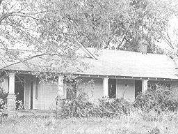
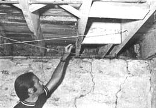
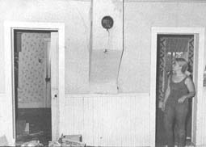
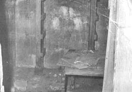
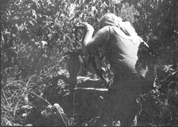

FIRST, THE BAD NEWS: SINCE THE END OF WW II, HUNDREDS OF THOUSANDS OF SMALL FAMILY FARMERS HAVE BEEN FORCED OFF THE LAND BY SPRAWLING CORPORATE AGRIBUSINESS CONGLOMERATES.
NEXT, THE GOOD NEWS: THERE ARE NOW THOUSANDS UPON THOUSANDS OF ABANDONED FARMHOUSES SCATTERED THROUGHOUT THIS COUNTRY. ALTHOUGH MOST NEED MODERNIZING, A GOODLY NUMBER ARE AVAILABLE-WITH (MAYBE) BARN, OUTBUILDINGS AND GARDEN PATCH THROWN IN-AT BARGAIN BASEMENT PRICES.
Thanks to today's large-scale agricultural operations, there are literally thousands of old farmhouses in the United States begging for someone to give them a second chance. Usually abandoned because they were no longer needed when two or more small farms were consolidated into a single large one, such structures have often been left to deteriorate from neglect. Some lack running water or indoor toilets, most do have electricity . . . and a good many are perfectly livable "as is". In many cases-although the big operators won't sell you lot of land-you can buy one of these homes, its outbuildings and a couple of acres for a pretty reasonable price.
I know three ways of locating such an old house. The first, and probably easiest, is to contact a real estate company (United Farm Agency, 612 West 47th St., Kansas City, Missouri 64112; Strout Realty, P.O. Box 2757, Springfield, Missouri 65803; Safebuy Agency, 2405 Gaines St., Little Rock, Arkansas 72203) which deals in farm property from coast to coast . . . and ask for listings in the area of your choice.
A second way to find these old homes (it's both more fun and time-consuming) is by watching the classified ads in the papers. Keep your eyes open for offers to sell that say "handyman's delight" or some such thing.
The third-and probably best way to get a good deal-method of scouting out abandoned farmhouses is to do just that: scout out your own discovery by driving the back roads and talking to everyone in the area that interests you.
No matter which approach you use, do restrict your looking to regions at least 60 miles from large cities if you're really after a bargain. Today's highways make it easy for commuters to drive that distance daily . . . and bid up all the land within (and often beyond) such a radius.
Once you've located an appealing property, you should first-before taking any other action-determine if the building is structurally sound. You may well consider it a good investment to hire a competent building inspector or carpenter to look over the house and advise you on its condition. Then again, you may want to-or have to-pass judgment on the property yourself. In any case, remember that the longer a house has been sitting abandoned, the more difficult it is to determine whether or not the structure is essentially sound and repairable. Don't gloss over-or allow your hired expert to gloss over-anything.
If you act as your own inspector, there are several quick checks you can and should make on the structural integrity of the home in question.
To begin with, look for evidence of termites . . . and look hard. The insects eat beams, joists and other timbers away from within and their damage is often completely overlooked (until too late) by people who make casual, walk-through surveys of a building. Go down in the basement (or outfit yourself with coveralls and crawl under the house if the structure has no cellar) and stab the joists and sill plates with a sharp knife or ice pick. Undamaged beams will be solid but your instrument will plunge right through the timbers that termites have devoured from the inside.
Forget any home that has an understructure badly riddled by the bugs. You'll be buying nothing but trouble. If the insects have made inroads into only small areas of a building, however, you can repair the damaged timbers by "scabbing on" or "nail mating" reinforcing beams across the weakened areas after taking steps to insure that the little wood caters leave the house.
Actually, ridding a building of termites without once resorting to poisonous chemicals can be relatively easy. The insects do not fly into a house, nor do they stay in its timbers. They live underground in colonies and make regular forays from the nest to nearby supplies of wood and the other cellulose materials they eat. Interestingly enough, termites will attack only wood that is in direct contact with the ground or that the colony is allowed to build a mud tube to. The insects, in short, must have a protected and maintained entry to the wood (your house) they eat. Remove that entry and you've removed the termites.
Termites are controlled most simply and surely, then, by (1) making sure no wooden portions of a building extend down into the ground, (2) removing all wood, paper and other cellulose matter from under the structure and around its foundation, (3) ventilating all damp crawl spaces and (4) scraping any suspicious mud tubes off the building's masonry or rock foundation.
Your ice pick test may turn up signs of another condition that sometimes damages the timbers of an old house as much or more than termites: dry rot. This is a powdery-white fungus that grows on overly-damp wood and spreads most rapidly in warm climates. If an infestation is mild, the damaged joists, etc. can be removed and/or replaced and the fungus killed by installing ventilators in the trouble spots so that they're no longer excessively humid.
After carefully examining the understructure of your potential house, scrutinize the building's foundation and lower walls for the telltale brown stains of flood marks (which will be more or less horizontal as opposed to the uneven splotches on ceilings and walls caused by seepage through the roof).
Check the attic (if you can't find an access opening, make one) by taking a good strong flashlight and examining the upper ceiling joists, the rafters and roofing. The rule of thumb here is that if only the roofing needs repairs, you're in good shape . . . but if any of the ceiling joists or rafters show signs of weakness, breakage or rot, you should steer clear of buying the house.
The roof will probably be covered with wood shingles (which may have rotted) or asphalt (that the wind could well have lifted off to expose the planking and metal valley flashings underneath). You may even find that varmints have chewed their way in, leaving gaping holes through which rainwater can follow. Wood shingles are the hardest to patch but will probably need the least work since they seem to last the longest.
Examine the chimney flue while you're up in the attic . . . is it solid and sound, or is it going to require retucking with mortar?
Chances are the building will need at least some new electrical wiring although, if the leads you trace out are not seriously chewed or deteriorated, you may be able to get by-at least for normal use-with the system already in the house. Then again, if you're addicted to today's truckload of modern "juice" gobblers, you might want to completely rewire the structure to prevent any possible overloads.
In many unzoned areas you can legally rewire a house yourself. If you decide to tackle such a project, get a copy of the wiring codes from your county library and use the old leads in the building for a guide as you instill new cables in a good 3-wire, 240-volt system. Then hire a licensed electrician to come in, make a final inspection and hook the new wiring to the power line that runs into the house.
Check the walls of any old home you're thinking of buying, especially the outside ones and the interior load-bearing partitions (which run at right angles to and support the floor joists of the story above). Studding should be fairly solid and show no signs of weakness.
The walls of most old homes you'll look at will be finished in plaster over lath and there's a good chance that the (probably) heavily papered plaster will be falling apart. The situation is not as bad as it may seem, however, as the holes can be patched with more plaster or-if you want to splurge-covered with wallboard or paneling.
Most frame homes built before WW II were not insulated, although a good percentage of such houses have had insulation of one kind or another blown in or otherwise added over the years. The addition, obviously, is an added plus on any house you might buy . . . so look for it. There's no place to put insulation in a brick or stone building, of course, except for under the roof or in the attic . . . where it's still a definite plus.
The floors of an old farmhouse may well slant one way or the other and sag a bit in the middle even though the joists in each room are sound and in good condition. There's a good chance that the flooring itself will be solid oak and in pretty good shape (although some of the earlier country homes do have yellow pine planking that will have deteriorated somewhat more than oak).
Almost any abandoned home loses its windows to vandals or windstorms sooner or later or, at the very least, needs a completely new caulking job around all its panes of glass. Expect to spend a few dollars here.
Check the fireplace if the building you're looking at has one. You should be able to see daylight up the flue and the shaft should be lined with fire brick (or an equivalent) and should draw smoke well. Test that draw by lighting a piece of paper and holding it at the edge of the hearth. The paper should burn quickly and leave no smoke trails in the room. If the fireplace doesn't draw well, a good cleaning for bird and rodent nests (easy) or caked-on tars and resins (difficult) will be in order.
Many old-time farmhouses were warmed with room heaters (first a coal or wood-burner and later, possibly, an LP-gas stove). Such an austere heating system means closing off sections of the house in winter, heating only the kitchen and living room and sleeping in a cold bedroom under frosty blankets. A central furnace (usually in the basement) is far better where comfort is concerned although more expensive to maintain (it takes more fuel to heat a whole house than to heat only a couple rooms).
Most really old farm kitchens started out with a woodburning cook stove, which was probably moved out and replaced with an LP or electric range somewhere along the way. If you look long enough you'll most likely discover the old kitchen flue (covered with wallpaper or patched in) and, if you unplug the vent, you can even move in an honest woodburning range again and cook just like they used to cook in the good ole days. Just make sure the flue is not blocked by falling brick or collapsed liner and that the passage is sound and well tucked all the way up through the roof with metal flashing securely fastened in place and waterproofed with tar.
The majority of early farmsteads had a hand pump and outhouse instead of indoor plumbing and toilets . . . and the older homes you find equipped with modern facilities may well have had one or more individual fixtures removed. In any case, plan almost certainly on cleaning the septic tank before being able to use the toilet.
The single most important matter to consider when buying any rusticated property is the matter of water. Most old farmhouses have (1) a deep drilled or shallow dug well, (2) a spring and/or (3) a cistern. Dug wells and cisterns were most favored by the old-timers . . . they used springs when they had such a supply of water handy . . . and deep wells-which were expensive to drill in earlier days-are seldom found near really old homesteads.
Dug wells are generally about 25 to 35-certainly no more than 50-feet deep. They were usually hand sunk through dirt and clay down to rock or sandstone, then lined to the top with rocks or concrete and topped with a cement or wooden platform on which was placed the familiar old hand pump (or, in rare instances, a roofed-over windlass for letting down a bucket on a rope). Watch out for such wells with rotted away covers and/or sides that have started to cave in . . . they aren't dependable as a water supply and the danger of further cave-ins makes them hazardous to repair. A good old dug well can be made serviceable again by a thorough cleaning and-sometimes-a relining with cement but, unless it's on a really good vein of water, such restoration may not be worth the effort (dug wells regularly go dry during droughts).
Cisterns or "second wells" are quite commonly found on old farmsteads. They're nothing but big concrete or stone-lined tanks buried in the ground and are filled with rainwater piped from the house and barn roofs and strained through a charcoal filter. Such straining doesn't purify the water enough to remove all harmful bacteria (and, therefore, make it safe for drinking purposes) but the soft water stored in a cistern is ideal for laundry use and the washing of hair, etc.
A good many old houses in some parts of the country depend on springs for their water. Any time you run into such a situation, though, ask around to determine if the spring or springs in question flow during dry weather and try to learn if they come from far enough underground to remain free of surface contamination.
It's not likely you'll find a drilled well on an old farm, although that's the most dependable water source of all . . . and you'll probably wind up putting in such a well on any property you buy that lacks one. When you do locate an old country place with a driven or drilled deep well, however, you'll often find a genuine windmill and water pump thrown in for good measure.
It goes without saying, I suppose, that whatever form of water supply an old farmhouse has should be tested for purity by the local county extension service or health office before you begin serious discussions of buying the property.
There's often quite a cluster of woodsheds, chicken coops, barns, garages and other outbuildings around old country houses and you should look them all over and weigh their value to you before making a decision to buy or not to buy any abandoned farmstead you find. Most of these extra structures will be reasonably familiar to you . . . but one-the old storm/fruit cellar half-buried in the backyard-can be a welcome surprise.
When run down, these cellars are usually so full of mud and water and creepy-crawlies that you may tend to completely overlook their usefulness. Once cleaned up, however, th e dugout structures are welcome shelters during severe wind storms and absolutely nothing touches them for the storage of apples, potatoes and other root crops through a long, cold winter.
This discussion of how to conduct a preliminary survey of abandoned farmsteads, although relatively short, should save you a lot of time in narrowing your search down to that one piece of property that is just right for you. The points I've made should even steer you in the right direction for making a more thorough and detailed inspection of the old country house that you finally either do or do not buy.
If you find yourself discouraged by the points I've raised, perhaps you didn't really want to renovate an abandoned farmstead after all . . . but if you're now more determined than ever to breathe new life into a fine old real house, more power to you! There's some great old homes, available for bargain basement prices, just waiting for you out there in that fresh country air.
|
 |
 |
 |
|
 |
 |
|